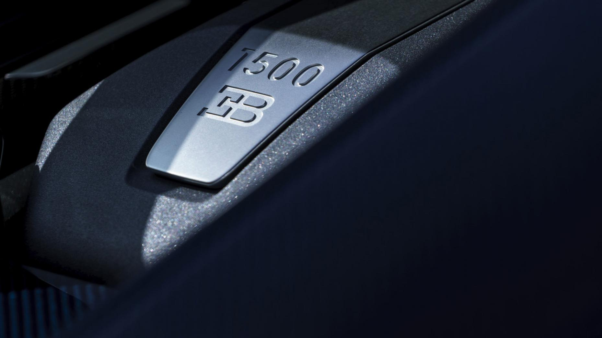
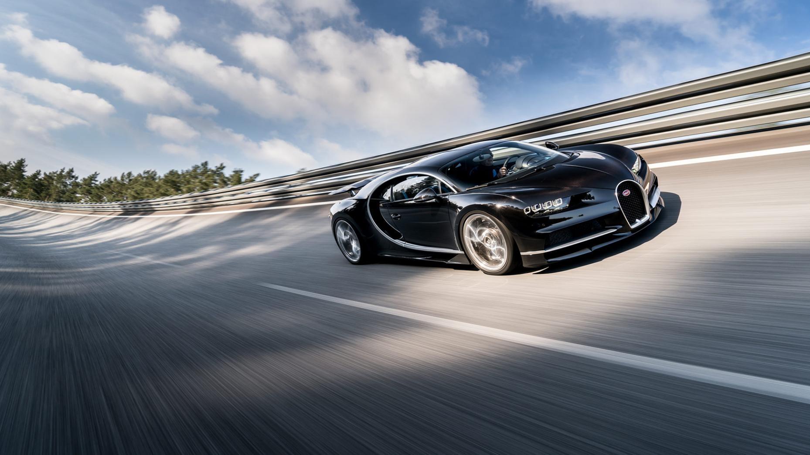
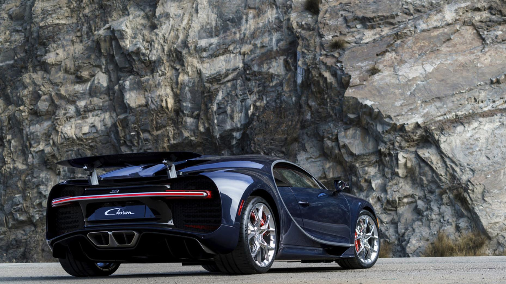
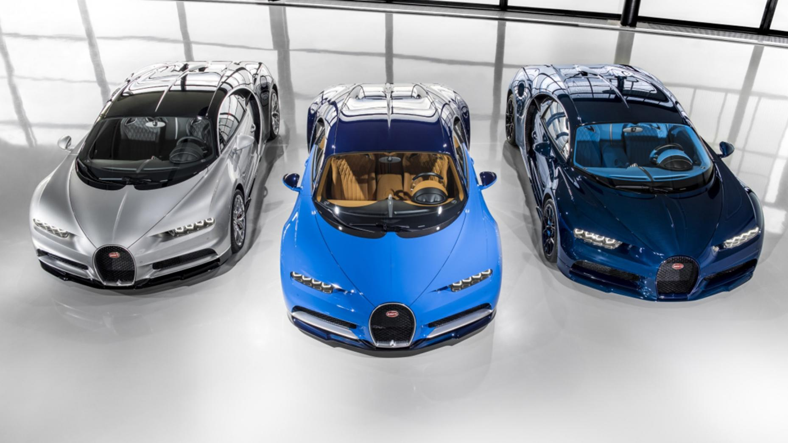
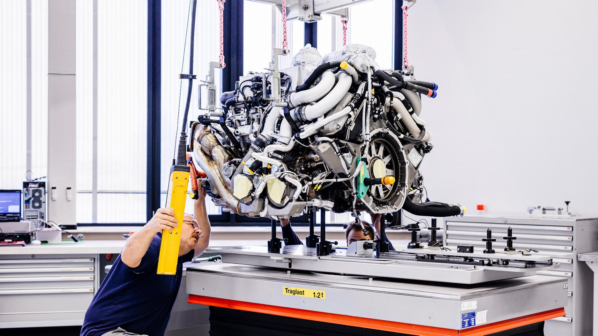
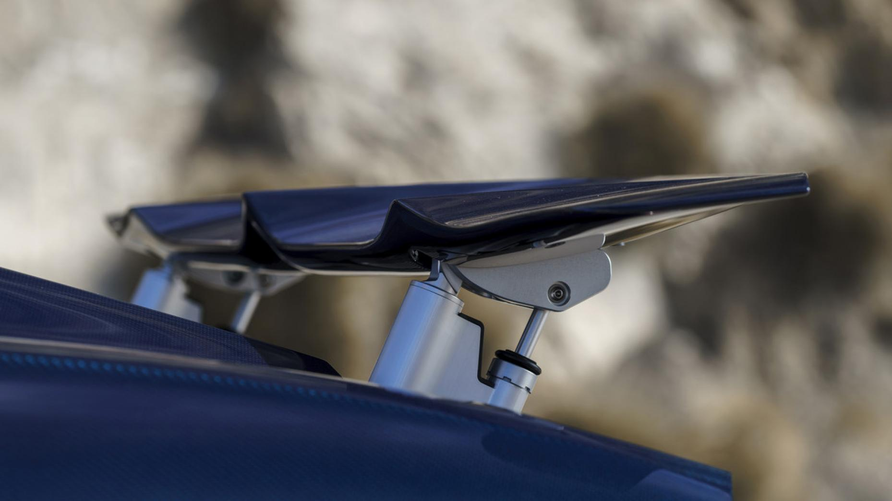

And power by the score – the new Bugatti’s mind-warping specs, in digital form
On episode four of TG TV s24, you may have spotted Chris Harris behind the wheel of the Bugatti Chiron. And if, like us, you were awestruck by the vision of Mr Harris powersliding a 1479bhp hypercar, you’re probably replaying the vision in your head right now. Well, if you’re in the UK, you can watch it again, or you could relish in a little game of Top Trumps. Although it really isn’t Top Trumps. As Harris said in his TG telly piece, the Chiron isn’t really a car that you compare to the current holy trinity of hybrid hypercars (the 918, P1 and LaFerrari) so this is more a celebration of numbers – usually the bizarrely large.

Torque: 1180lb ft
Torque is a right bugger to try and explain. Simply put, it is the amount of force enacted by the engine, best expressed in a ‘this much force applied by a lever this long’, which is why we say pound feet, or Newton metres.
So, let’s quantify 1,180lb ft with a practical example. To turn the Chiron’s driveshaft with as much force as the W16’s engine, you’d need a 360m-long, entirely inflexible pole, with a pound of force at the end. It’s a poor example, really, because the weight of a pole that’s as long as three football pitches would have somewhat of an effect, you’ll agree.
So, let’s try another example. If you grabbed Ivan Drago, and got him to land the biggest punch he’d ever thrown at a paddle that’s one foot from the Chiron’s driveshaft, it would, for the briefest of moments, produce as much torque as the Chiron’s engine can do day in, day out, at anywhere from 2,000 to 6,000rpm.

Maximum speed: 261mph (for now)
Bugatti says that the top speed of the Chiron is a bit of an unknown quotient for now, until they figure out just how much punishment the tyres can take.
As you might expect, 261mph is plenty fast. But it’s entirely possible that 275mph or even 280mph is on the cards, and, as Harris says, a future version of the Chiron might even crack 300mph. To go that fast, on the ground, in something with air conditioning and a stereo, is the very best kind of madness.
But, back to its official 261mph top speed. That’s 23 times faster than the Lunar Rover went during Apollo 17. Now you know.

Acceleration: brisk
Let’s not quibble about 0-62 times when we’re talking about a car that can easily do four times that speed. Instead, we’ll use the proper hypercar metric: 0-124mph, or 200km/h in metric-ese.
The Chiron can dispatch the 0-124mph dash in 6.5 seconds, or about as long as it takes a Golf GTI to do 0-62.
In case you were curious, the Chiron will do zero to 186mph in 13.6 seconds – more than half a second faster than it takes a base model Seat Ibiza to do 0-62.

Price: €2.4m (before tax)
Now, that works out to around the £2m mark, before tax. And that is not the sort of money the average person just wakes up to find in their account. It’s more than a Koenigsegg Regera, which could very well be every bit as brisk as a Chiron.

Rarity: 500
Yup, just 500 Chirons will be built. For reference, there are fewer than 2,500 Bengal tigers left in the wild.
And remember the endless specials and ‘one-offs’ that the Veyron had? The Chiron will likely get its own, but half of the 500 that Bugatti will ever make have already been sold. That’s a sale rate that the Veyron could only look at with envy.

Engine: 8.0-litre W16
Four turbochargers. Eight litres. Sixteen cylinders. And 25 per cent more power than the Veyron. This you know.
What you may not know is that the Chiron has six catalytic converters, with a combined active area of more than 30 football pitches.
Or, how about the 32 fuel injectors – two per cylinder – that combine fuel with 60,000 litres of air a minute, emptying the 100-litre tank in six minutes and 49 seconds at wide-open throttle.

Body: wide
The Chiron’s drag coefficient changes according to which drive mode it’s in. Tool around in auto and it’s 0.38, which raises to 0.40 in handling mode and drops to 0.35 in top speed mode. When the airbrake deploys, the drag coefficient jumps to 0.59 – or about as bad as a 1998 Jeep Wrangler. That’s probably the only time you’ll see the two compared.
A drag coefficient of 0.35 doesn’t seem all that impressive by itself, but when you consider that the Chiron has a massive horseshoe grille, is more than two metres wide and 1.2 metres high, it starts to make more sense.
Something that grabs your eye immediately is the comparative stubbiness of the Chiron – at just 4.5 metres in length, it’s no longer than a Porsche 911.
Share this page: